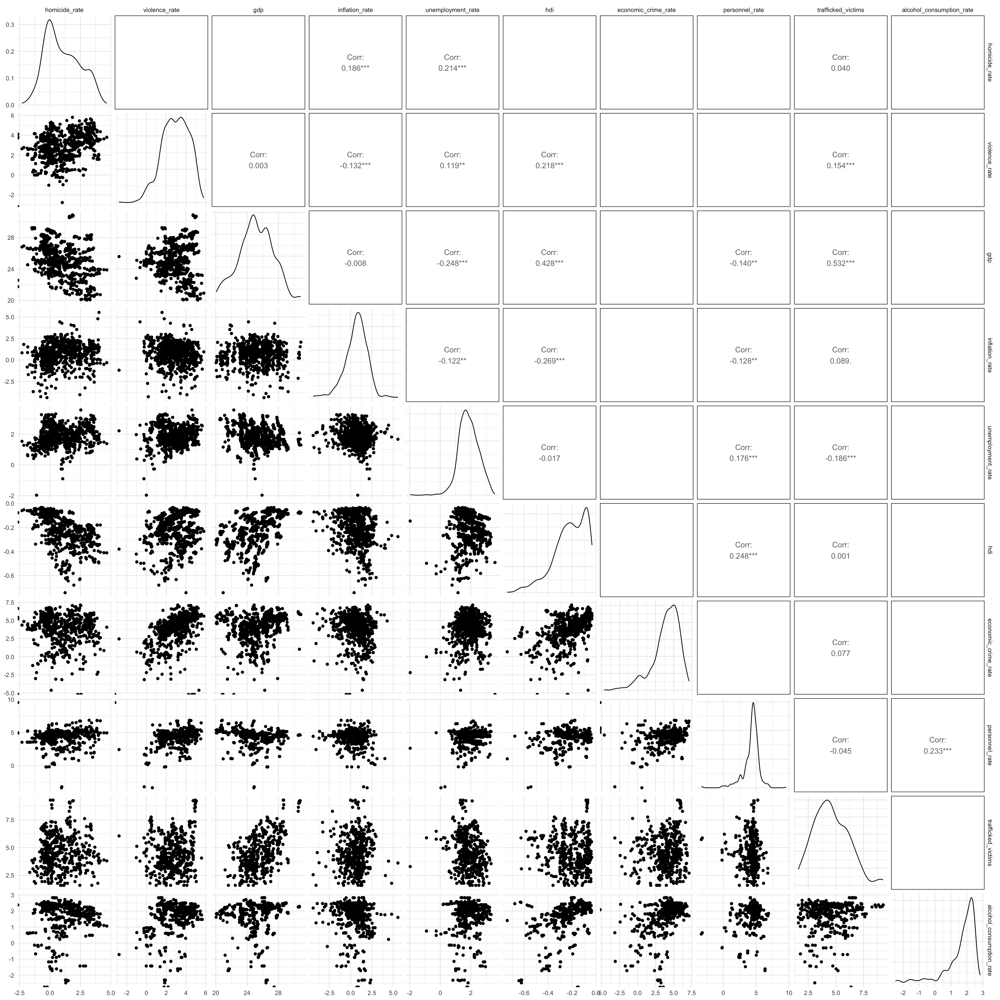
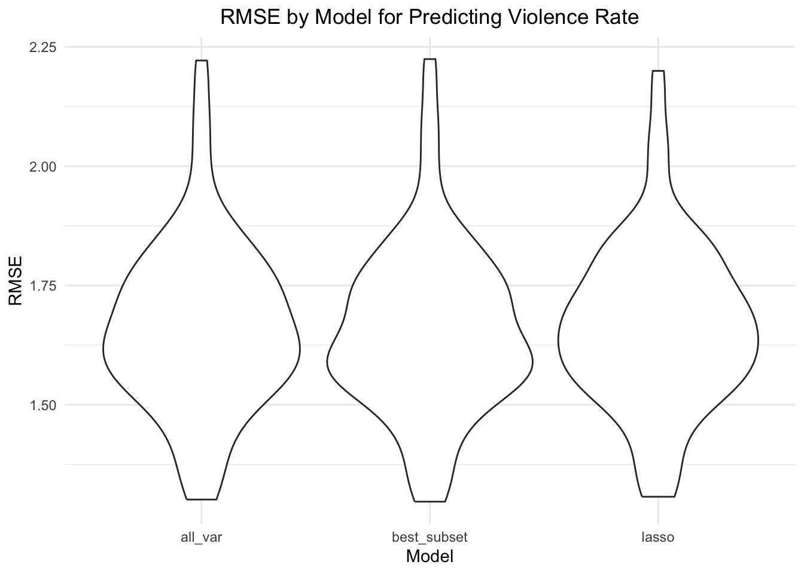

Regression
Introduction
Our motivation for doing regression is to determine the significant contributors to two outcomes of violence - homicide rate and violence rate.
Violence is a complex and multifaceted issue, especially when considered in a global context. To better understand its various dimensions, we aimed to include a diverse set of predictors that reflect different underlying factors driving violence. Specifically, economic indicators like GDP, inflation rate, and the Human Development Index (HDI) capture aspects of economic inequality, which can influence social unrest and violence. Crime rate and personnel rate serve as proxies for the level of criminal activity and law enforcement presence, respectively, which can contribute to both non-violent and violent crime. Additionally, trafficked victims and alcohol consumption rate are included to explore the role of cultural norms and behaviors, such as organized crime, substance abuse, and social vulnerability, which can be key drivers of violence.
We hypothesize that homicide rate may be influenced by more “direct” indicators including crime rate, HDI and trafficked_victims. We hypothesize that violence rate may be influenced by all factors we included in this dataset, because violence can exist in multiple forms.
We perform this analysis to uncover the extent to which different factors influence homicide rate and violence rate as outcomes.
Functions for Fitting Data
Best_subset
best_subset = function(predictor, outcome, criterion) {
optimal_subset <-
leaps(x = predictor, y = outcome, nbest = 3,
method = criterion, names = names(predictor))
if (criterion == "Cp") {
optimal_criterion <- optimal_subset[[criterion]] %>% min()
optimal_subset_idx <- optimal_subset[[criterion]] %>% which.min()
} else {
optimal_criterion <- optimal_subset[[criterion]] %>% max()
optimal_subset_idx <- optimal_subset[[criterion]] %>% which.max()
}
list(Criterion = optimal_criterion ,
Variable_Selection = optimal_subset$which[optimal_subset_idx,])
}This function serves as a wrapper around the leaps function. It performs best subset variable selection and then prints out the optimal model diagnostic and the predictor variables included in the regression model.
fit_glmnet
fit_glmnet = function(df, alpha, outcome, lambda) {
outcome_formula <- as.formula(paste(outcome, "~."))
predictor <- model.matrix(outcome_formula, data = df)[,-1]
predicted <- df %>% pull(outcome)
model_fit <-
glmnet(predictor, predicted, lambda = lambda, alpha = alpha)
model_cv <-
cv.glmnet(predictor, predicted, lambda = lambda, alpha = alpha)
lambda_opt = model_cv[["lambda.min"]]
model_fit <-
glmnet(predictor, predicted, lambda = lambda_opt, alpha = alpha)
return(model_fit)
}This function serves as a wrapper for the glmnet fitting processing and covers both the fitting and cross-validation process. It returns the glmnet object produced after fitting with optimal lambda value.
rmse_glmnet
rmse_glmnet = function(model, test, outcome) {
outcome_formula <- as.formula(paste(outcome, "~."))
predictor <- model.matrix(outcome_formula, data = test)[,-1]
predictions <- predict.glmnet(model, model[["lambda"]], newx = predictor,
type = "response")
predictions <- as.vector(predictions)
observed <- test %>%
pull(outcome)
return(caret::RMSE(predictions, observed))
}This is a wrapper function for the glmnet prediction and evaluation process. Given a fitted glmnet model, a test dataset, and an outcome variable of interest, this function predicts the avlues in the test dataset and then calculates and returns the rmse.
Exploratory data analysis
Visualizations of distributions

All variables are skewed right, except for human development index which is bimodal and slightly left-skewed. We will apply ln transformations and Box-Cox transformations to these variables. Even though it is not necessary to normalize the distribution of predictors, this step will stabilize variance and reduce heteroscedasticity. We believe it will be helpful for further steps with model.
Transformations
Transformation step involves writing a function for natural log
transformation and a function for Box-Cox transformation. The functions
will be mapped into the nested list col which includes all continuous
variables in the merged_violence_df dataset.
Natural Log Transform.
ln_transform = function(value) {
return(log(abs(value)))
}
ln_df =
merged_violence_df |>
mutate(across(c(homicide_rate:alcohol_consumption_rate),
ln_transform))
map(list, \(x) plot_distributions(pull(ln_df, x), x))## [[1]]
##
## [[2]]
##
## [[3]]
##
## [[4]]
##
## [[5]]
##
## [[6]]
##
## [[7]]
##
## [[8]]
##
## [[9]]
##
## [[10]]
Box-Cox Transform.
boxcox_transform = function(value) {
if (all(is.na(value))) {
return(value)
}
min_value = min(value, na.rm = TRUE)
if (min_value <= 0) {
value = value + abs(min_value) + 0.00001
}
if (length(unique(value)) == 1) {
return(value)
}
boxcox_result = MASS::boxcox(value ~ 1, plotit = FALSE)
lambda = boxcox_result$x[which.max(boxcox_result$y)]
if(lambda != 0) {
transformed_value = (value^lambda - 1) / lambda
} else {
transformed_value = log(value)
}
return(transformed_value)
}
boxcox_df = merged_violence_df |>
mutate(across(c(homicide_rate:alcohol_consumption_rate),
~ boxcox_transform(.)))
map(list, \(x) plot_distributions(pull(boxcox_df, x), x))## [[1]]
##
## [[2]]
##
## [[3]]
##
## [[4]]
##
## [[5]]
##
## [[6]]
##
## [[7]]
##
## [[8]]
##
## [[9]]
##
## [[10]]
While initial EDA suggested that logarithmic and Box-Cox transformations might be useful for improving normality, the results indicate that these transformations are not entirely necessary. The primary motivation for using these transformations is often to address skewness. However, after reviewing the data and the results of the transformations, we found that the original data already provides a reasonable representation of the underlying distribution.
While the natural logarithm helped with normality, the Box-Cox transformation did not substantially improve the data’s distribution. Box-Cox transformation requires shifting data to be strictly positive, which could introduce unnecessary complexity.
Since no major improvements in normality were observed with the transformations, we ultimately decided that it would be more appropriate to use the original data. This approach avoids unnecessary manipulation and preserves the integrity of the underlying data.
Multicolliniearity diagnostics
We used cor() to find the correlation between the eight
predictors of homicide rate and violence.

There is moderate correlation between hdi and
alcohol_consumption_rate, corr = 0.5, and moderately high
correlation between trafficked_victims and
gdp, corr = 0.7.
Data Pre-processing
In this step, we manipulate the merged_violence_df in preparation for later statistical modelling.
Define Lambda Range
lambda = 10^(seq(-2, 2.75, 0.1))Pre-processing for homicide.
homicide_df =
merged_violence_df |>
dplyr::ungroup() |>
dplyr::select(
homicide_rate, everything(), -violence_rate, -year, -country, -region,
-iso3_code) |>
drop_na()
homicide_matrix <- model.matrix(homicide_rate ~., data = homicide_df)[,-1]
homicide_predictors <- homicide_df %>%
dplyr::select(-homicide_rate)
homicide_outcome <- homicide_df %>%
pull(homicide_rate)Pre-processing for violence.
violence_df =
merged_violence_df |>
dplyr::ungroup() |>
dplyr::select(
violence_rate, everything(), -year, -homicide_rate, -country, -region,
-iso3_code) |>
drop_na()
violence_matrix <- model.matrix(violence_rate ~., data = violence_df)[,-1]
violence_predictors <- violence_df %>%
dplyr::select(-violence_rate)
violence_outcome <- violence_df %>%
pull(violence_rate)Baseline MLR with additive effects
First, we will fit a baseline MLR with additive effects from all possible predictor variables to use as a point of reference for our modeling process. This step provides basic understanding of the extent to which different covariates contribute to the outcomes of interest.
Predict Homicide Rates
| term | estimate | std.error | statistic | p.value |
|---|---|---|---|---|
| (Intercept) | 77.1223904 | 6.8949976 | 11.1852672 | 0.0000000 |
| gdp | 0.0000000 | 0.0000000 | 1.4401126 | 0.1508748 |
| inflation_rate | -0.7310164 | 0.1997345 | -3.6599403 | 0.0002978 |
| unemployment_rate | -0.3801340 | 0.1437800 | -2.6438594 | 0.0086262 |
| hdi | -79.7616365 | 9.3579304 | -8.5234270 | 0.0000000 |
| crime_rate | 0.0047858 | 0.0037406 | 1.2793927 | 0.2017441 |
| personnel_rate | 0.0090816 | 0.0064515 | 1.4076778 | 0.1602584 |
| trafficked_victims | -0.0004297 | 0.0005839 | -0.7358718 | 0.4623817 |
| alcohol_consumption_rate | -0.2165605 | 0.2052374 | -1.0551708 | 0.2921934 |
Results from baseline MLR show that that inflation rate, unemployment rate and hdi are significant predictors of homicide rate at significance level alpha = 0.05.
Check Baseline Homicide Prediction Model for Colinearity
| variable | VIF |
|---|---|
| gdp | 2.396884 |
| inflation_rate | 1.176607 |
| unemployment_rate | 1.164411 |
| hdi | 2.455203 |
| crime_rate | 1.700020 |
| personnel_rate | 1.306548 |
| trafficked_victims | 2.315171 |
| alcohol_consumption_rate | 1.896571 |
Results from VIF show that there is no multicollinearity issue (VIF < 5).
Predict Violence Rates
| term | estimate | std.error | statistic | p.value |
|---|---|---|---|---|
| (Intercept) | 44.2045930 | 19.9655911 | 2.2140388 | 0.0275754 |
| gdp | 0.0000000 | 0.0000000 | 2.7199674 | 0.0069083 |
| inflation_rate | -2.0163975 | 0.5783639 | -3.4863818 | 0.0005625 |
| unemployment_rate | -0.1171670 | 0.4163384 | -0.2814226 | 0.7785796 |
| hdi | -12.9837171 | 27.0974152 | -0.4791497 | 0.6321801 |
| crime_rate | 0.1193201 | 0.0108316 | 11.0158771 | 0.0000000 |
| personnel_rate | -0.0628082 | 0.0186813 | -3.3620841 | 0.0008735 |
| trafficked_victims | 0.0082359 | 0.0016908 | 4.8709129 | 0.0000018 |
| alcohol_consumption_rate | -1.6323824 | 0.5942983 | -2.7467389 | 0.0063817 |
Results from MLR show that gdp, inflation rate, crime rate, personnel rate, number of trafficked victims per 100,000 and alcohol consumption rates are significant predictors of violence rate at significance level alpha = 0.01.
Calculate VIF for baseline violence MLR
| variable | VIF |
|---|---|
| gdp | 2.396884 |
| inflation_rate | 1.176607 |
| unemployment_rate | 1.164411 |
| hdi | 2.455203 |
| crime_rate | 1.700020 |
| personnel_rate | 1.306548 |
| trafficked_victims | 2.315171 |
| alcohol_consumption_rate | 1.896571 |
Results from VIF show that there is no multicollinearity issue (VIF < 5).
Lasso
We used Lasso to as a feature selection tool to find the most important variables in predicting homicide rate and violence rate.
Predictors for violence rate:
To prepare data for Lasso (fitting violence rate), we removed variables that are not predictors including iso3_code, country, region, year and homicide rate. We then dropped NA values before performing Lasso.
| term | step | estimate | lambda | dev.ratio |
|---|---|---|---|---|
| (Intercept) | 1 | 29.5432748 | 0.7943282 | 0.5165853 |
| gdp | 1 | 0.0000000 | 0.7943282 | 0.5165853 |
| inflation_rate | 1 | -1.5694059 | 0.7943282 | 0.5165853 |
| crime_rate | 1 | 0.1088544 | 0.7943282 | 0.5165853 |
| personnel_rate | 1 | -0.0473156 | 0.7943282 | 0.5165853 |
| trafficked_victims | 1 | 0.0078378 | 0.7943282 | 0.5165853 |
| alcohol_consumption_rate | 1 | -1.3407173 | 0.7943282 | 0.5165853 |
The optimal lambda for violence rate is 0.794. Based on lasso
estimates, the coefficient for gdp was shrunk to 0.
Predictors for homicide rate.
| term | step | estimate | lambda | dev.ratio |
|---|---|---|---|---|
| (Intercept) | 1 | 75.5833480 | 0.0630957 | 0.3524531 |
| gdp | 1 | 0.0000000 | 0.0630957 | 0.3524531 |
| inflation_rate | 1 | -0.6907875 | 0.0630957 | 0.3524531 |
| unemployment_rate | 1 | -0.3553263 | 0.0630957 | 0.3524531 |
| hdi | 1 | -78.2143914 | 0.0630957 | 0.3524531 |
| crime_rate | 1 | 0.0043479 | 0.0630957 | 0.3524531 |
| personnel_rate | 1 | 0.0085533 | 0.0630957 | 0.3524531 |
| trafficked_victims | 1 | -0.0002459 | 0.0630957 | 0.3524531 |
| alcohol_consumption_rate | 1 | -0.2056343 | 0.0630957 | 0.3524531 |
The optimal lambda for homicide rate is 0.050. Similar to the results
from violence, the coefficient for gdp was shrunk to 0.
Criterion-based procedure
Best Subset Regression for Violence Rate
Predict violence rate using r-squared as criterion
## $Criterion
## [1] 0.5103599
##
## $Variable_Selection
## gdp inflation_rate unemployment_rate
## TRUE TRUE FALSE
## hdi crime_rate personnel_rate
## FALSE TRUE TRUE
## trafficked_victims alcohol_consumption_rate
## TRUE TRUEPredict violence_rate using Cp as criterion
## $Criterion
## [1] 5.363491
##
## $Variable_Selection
## gdp inflation_rate unemployment_rate
## TRUE TRUE FALSE
## hdi crime_rate personnel_rate
## FALSE TRUE TRUE
## trafficked_victims alcohol_consumption_rate
## TRUE TRUECheck for co-linearity in best subset violence model
| variable | VIF |
|---|---|
| gdp | 2.346184 |
| inflation_rate | 1.070415 |
| crime_rate | 1.373276 |
| personnel_rate | 1.240083 |
| trafficked_victims | 2.282920 |
| alcohol_consumption_rate | 1.168675 |
Best subset regression for Homicide Rate
Predict homicide rate using R-squared as criterion
## $Criterion
## [1] 0.3367418
##
## $Variable_Selection
## gdp inflation_rate unemployment_rate
## TRUE TRUE TRUE
## hdi crime_rate personnel_rate
## TRUE TRUE TRUE
## trafficked_victims alcohol_consumption_rate
## FALSE TRUEPredict Homicide Rates using Cp as criterion
## $Criterion
## [1] 6.511243
##
## $Variable_Selection
## gdp inflation_rate unemployment_rate
## FALSE TRUE TRUE
## hdi crime_rate personnel_rate
## TRUE TRUE FALSE
## trafficked_victims alcohol_consumption_rate
## FALSE FALSECheck for co-linearity in best subset homicide model
| variable | VIF |
|---|---|
| inflation_rate | 1.169288 |
| unemployment_rate | 1.034265 |
| hdi | 1.468355 |
| crime_rate | 1.316883 |
The results from criterion-based procedures suggest that significant predictors for violence_rate are gdp, inflation_rate, crime_rate, personnel_rate, trafficked_victims and alcohol_consumption rate, with a total of 6 predictors. This yields the most appropriate Cp value (5.363), which is approximately close to the number of predictors, and highest adjusted R-squared (0.510).
For homicide_rate, the results are not as straightforward. The best model based on Cp and R-squared seems to be the model with 4 predictors because it has the lowest Cp (6.36), and a decently high adjusted R-squared (0.331), indicating a good balance between fit and complexity. As more predictors are added, R-squared adjusts slightly but Cp levels off at around 6 predictors. The model with 4 predictors, which includes inflation_rate, unemployment_rate, hdi, personnel_rate, seems to be a better trade-off.
Model Comparison
Create Training and Testing Datasets
cv_df_violence <-
modelr::crossv_mc(violence_df, 100)
cv_df_violence <- cv_df_violence %>%
mutate(
train = map(train, as_tibble),
test = map(test, as_tibble)
)
cv_df_homicide <-
modelr::crossv_mc(homicide_df, 100)
cv_df_homicide <- cv_df_homicide %>%
mutate(
train = map(train, as_tibble),
test = map(test, as_tibble)
)Fit Models
Violence
cv_df_violence <-
cv_df_violence %>%
mutate(
MLR_all_var = map(train, \(df) lm(violence_rate ~ ., data = df)),
MLR_best_subset = map(train, \(df) lm(violence_rate ~ gdp + inflation_rate +
crime_rate + personnel_rate + trafficked_victims +
alcohol_consumption_rate, data = df)),
lasso = map(train, \(df) fit_glmnet(df, outcome = "violence_rate",
alpha = 1,lambda = lambda))
) %>%
mutate(
rmse_all_var = map2_dbl(
MLR_all_var, test, \(mod, test) rmse(model = mod, data = test)),
rmse_best_subset = map2_dbl(
MLR_best_subset, test, \(mod, test) rmse(model = mod, data = test)),
rmse_lasso = map2_dbl(
lasso, test, \(mod, test) rmse_glmnet(mod, test, "violence_rate"))
) %>%
dplyr::select(starts_with("rmse_"))Homicide
cv_df_homicide <-
cv_df_homicide %>%
mutate(
MLR_all_var = map(train, \(df) lm(homicide_rate ~ ., data = df)),
MLR_best_subset = map(train, \(df) lm(homicide_rate ~ inflation_rate
+ unemployment_rate + hdi + crime_rate, data = df)),
lasso = map(train, \(df) fit_glmnet(df, outcome = "homicide_rate",
alpha = 1,lambda = lambda))
) %>%
mutate(
rmse_all_var = map2_dbl(
MLR_all_var, test, \(mod, test) rmse(model = mod, data = test)),
rmse_best_subset = map2_dbl(
MLR_best_subset, test, \(mod, test) rmse(model = mod, data = test)),
rmse_lasso = map2_dbl(
lasso, test, \(mod, test) rmse_glmnet(mod, test, "homicide_rate"))
) %>%
dplyr::select(starts_with("rmse_"))Compare RMSE
Violence

Homicide
